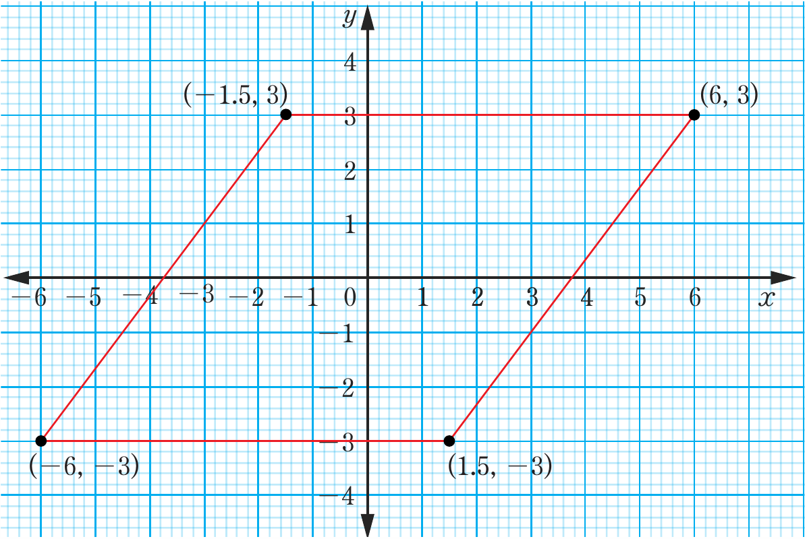
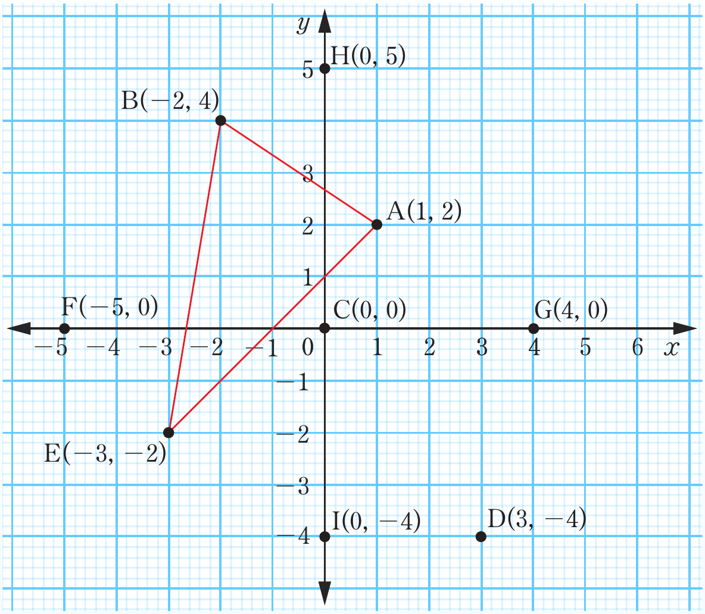

(e)

Parallelogram
5. (a)

Two coordinate-plane diagrams: the top shows a parallelogram with vertices at (-6, -3), (-1.5, 3), (6, 3), and (1.5, -3); the bottom shows triangle ABE with A(1, 2), B(-2, 4), and E(-3, -2), along with labeled points C(0, 0), D(3, -4), F(-5, 0), G(4, 0), H(0, 5), and I(0, -4).